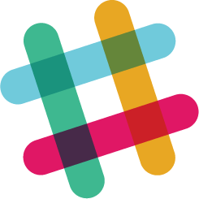

Stop multitasking 💆
Oneteam helps everyone on your team focus on just a few goals. And keep everyone on the same page. All in Slack.
Add Oneteam to Slack
Set it up in a minute. It's free.
Set it up in a minute. It's free.
No more vague goals and checking off an ever growing task list. Oneteam forces everyone to list only up to 3 actionable goals for the week.
Oneteam publishes the goals in a common Slack channel. This forces people to think hard about what they can and should realistically accomplish during the week.
The whole team reports their progress and potential problems twice a week (Wednesday and Friday).
This is just the right cadence to accomplish something meaningful and quickly resolve potential problems.
Set goals in async manner and stay on the same page.
Hold meetings to solve problems instead of reporting status.
Quickly see what everyone is working on and how it's going.
Everything is in Slack: goals, progress, problems, notifications.
Problems and bottlenecks get surfaced & solved quickly.
Setting goals and reporting only takes a minute because of Slack.
Yes, it is. The PPP framework has been popularized by some of the world's best companies (Facebook, Skype).
With Oneteam we took some of the ingredients that made PPP great, built it natively in Slack and tweaked a few things to make it even more effective.
Ongoing tasks can fit into Oneteam if you rephrase them into actionable goals.
For example: let’s say you’re a recruiter. While you obviously do a lot of screening and interviews, that’s not a very useful and measurable goal. Instead, you could set yourself goals like "Send 3 job offers" or "Get 2 candidates to the last stage of our interviewing process".
A question we found helpful when setting goals is: “Coming this Friday - what would I be proud to have done this week?”
That’s why we encourage simple, achievable and measurable goals.
Simple: goals that everyone on your team can understand. By making your goals understandable, you make sure that people can follow the progress and help you solve potential problems.
Achievable: goals that you are realistically capable of accomplishing in a week. We are all prone to set over-ambitious goals. But when you consistently overpromise and underdeliver, the team loses faith in your estimation capabilities.
Measurable: focus on making each goal as measurable as possible. For example: in case you need to deliver some kind of document, you could phrase the goal as “Finish the document and send it to Laura”. This would be much more measurable than plain “Work on the document”.
Unfortunately not. We are currently fully commited to build Oneteam only on the Slack platform.